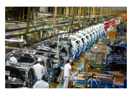
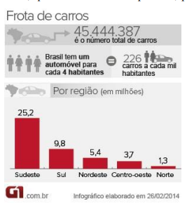
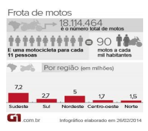
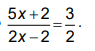
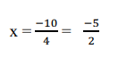
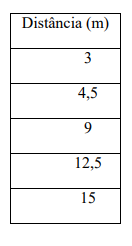
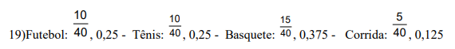

Capítulo 4 – a indústria petrolífera
A PROPORCIONALIDADE E AS EQUAÇÕES DO PRIMEIRO GRAU
ContextualizandoImagine que tudo o que é feito a partir do petróleo desaparecesse de repente durante a noite e, ao acordar, assim que você fosse tomar banho e fazer sua higiene, perceberia que o  encanamento da sua casa sumiu, assim como sua escova de dentes e tudo o mais que é feito de plástico. Seu guarda-roupa estaria praticamente vazio, pois a maioria de suas roupas era feita de fibras sintéticas, derivadas do petróleo. Nesse dia atípico, até mesmo se alimentar não seria fácil, a maioria dos alimentos que consumimos são produzidos com o uso de fertilizantes e defensivos agrícolas, e algumas embalagens de alguns alimentos, como o saquinho do leite pasteurizado, garrafas Pet ou embalagens de margarina, são feitas a partir de derivados do petróleo. Chegar até o trabalho seria bem demorado e cansativo, seria necessário percorrer longos caminhos a pé, já que não daria para ir nem de bicicleta, pois os pneus também são obtidos a partir do petróleo. Com a dificuldade de chegar ao trabalho você decidiria que é melhor ficar em casa e assistir TV, conectar-se à internet ou ouvir música. Você descobriria então, que tudo isso seria impossível, pois diversos componentes dos aparelhos eletrônicos são feitos de polipropileno, derivado do petróleo,  sem falar nos fios que conduzem a energia elétrica, todos revestidos de PVC. Isso significa que seus aparelhos eletroeletrônicos e eletrodomésticos não existiriam mais. Para seu desespero, você descobriria que não daria nem para telefonar, afinal o aparelho de celular praticamente desapareceu, pois também havia petróleo nele: na carcaça, nas teclas, no visor. Ainda bem que isso não é real, é imaginação. E, além disso, é também uma ótima oportunidade para você refletir sobre a importância do petróleo em seu dia-a-dia e sobre a diferença entre o uso consciente e o desperdício desse recurso tão importante. O petróleo não está em tudo, é verdade, mas com certeza seus derivados estão em muitos dos produtos que utilizamos no nosso cotidiano e facilitam bastante a nossa vida. A partir dos derivados do petróleo a produção agrícola se multiplicou, as distâncias ficaram menores e a Medicina fez inúmeros avanços, isso para citar apenas alguns dos setores beneficiados pelo refino do petróleo. No Brasil a produção é basicamente transportada via terrestre e a locomoção das pessoas nas cidades e os transportes intermunicipais e interestaduais usam basicamente combustíveis derivados do petróleo.
O número de carros e motos no Brasil cresce ano a ano.
 Com o aumento da frota de carros, o Brasil já tem um automóvel para cada 4,4 habitantes. São 45,4 milhões de carros. Há dez anos, a proporção era de 7,4 habitantes por carro. Com base nos números de registros do Departamento Nacional de Trânsito (Denatran) e nas estimativas populacionais do Instituto Brasileiro de Geografia e Estatística (IBGE) de 2013 revela que, das dez cidades com mais carro por habitante, nove estão na região Sudeste. A campeã é São Caetano do Sul. São 99 mil veículos de passeio para uma população de 156 mil – uma média de dois veículos para cada três pessoas. Uma das explicações para o índice é a alta renda per capita, é a cidade é a que tem o maior Índice de Desenvolvimento Urbano (IDH) do país.
O país tem hoje 18 milhões de motocicletas – uma para cada 11 habitantes. O número é mais de três vezes o registrado em 2003 (5,3 milhões), quando a proporção era de uma moto a cada 33 pessoas. Na cidade de Pereiro (CE), é difícil encontrar uma residência que não conte com uma moto. A cidade, que tem 16 mil moradores e 6,1 mil motos, é a que possui a maior proporção do tipo de veículo por habitante: são duas motocicletas a cada cinco pessoas aproximadamente.
Por um lado é importante compreendermos a importância dos derivados do petróleo no mundo atual e, é também importante, considerar a necessidade de investir na resolução de problemas urbanos evidenciados na análise dos infográficos. Como entender as afirmativas “O Brasil tem um automóvel para cada 4 habitantes”, “E uma motocicleta para cada 11 pessoas”? O que as embasa?
Como entender as afirmativas “O Brasil tem um automóvel para cada 4 habitantes”, “E uma motocicleta para cada 11 pessoas”? O que as embasa?
Caro aluno,
Ao longo deste capítulo, vamos estudar temas relacionados à proporcionalidade: razões, proporções e regra de três simples, envolvendo grandezas diretamente proporcionais. Vamos ampliar o estudo das porcentagens e iniciar o estudo das equações do primeiro grau.
(RE)CONSTRUINDO CONHECIMENTOS
As atividades propostas a seguir vão auxiliar a responder à questão proposta no início do capítulo
O ESTUDO DAS RAZÕES
Quando analisamos os infográficos que informam sobre as frotas de carros e motos no Brasil, deparamo-nos com as afirmações: “O Brasil tem um automóvel para cada 4 habitantes”, “E uma motocicleta para cada 11 pessoas”. O que embasa essas afirmativas é a ideia de razão.
A ideia de razão relaciona-se a um conceito antigo e essencial para o conhecimento matemático que, a princípio, é usado para comparar duas quantidades ou duas medidas. Na sociedade moderna, o conceito de razão surge nos jornais e nas revistas para comunicar a concentração de pessoas ou de veículos em uma determinada cidade ou o fluxo de carros em um pedágio. Aparece também nas mais variadas áreas do conhecimento, sempre para tornar visível a comparação de vários dados de um problema.
A palavra razão, vem do latim RATIO, e significa “divisão”, isto é, razão é o quociente entre dois números. Assim, razão de um número a para um número, sendo b, diferente de zero, é o quociente de b/a ou a : b. O número a é chamado antecedente e o número b é chamado consequente.
Voltando às afirmativas dos infográficos, um automóvel para cada 4 habitantes é a razão 1 para 4 ou o quociente 1/4 e uma motocicleta para cada 11 pessoas é a razão 1 para 11 ou o quociente 𝟏/𝟏𝟏 podemos ler a razão b/a como: a razão de a está para b, ou a está para b
RAZÕES ESPECIAIS
Existem algumas razões especiais muito utilizadas em nosso cotidiano. São elas: a velocidade média, a escala e a densidade demográfica.
A velocidade média é uma razão muito importante para sabermos a eficiência dos transportes. Qual é a velocidade média do metrô? Qual é a velocidade média de um ônibus? Se a preocupação nesses deslocamentos for o consumo de gasolina, mudará a informação, mas o conceito de razão permanecerá.
Outra aplicação da razão entre duas grandezas se encontra na escala de redução ou escala de ampliação, conhecidas simplesmente como escala. Usamos escala, quando queremos representar um esboço gráfico de objetos como móveis, plantas de uma casa ou de uma cidade, fachadas de prédios, mapas, maquetes, etc.
Já a concentração de pessoas em uma cidade, é definida como densidade demográfica, é a razão da quantidade de pessoas que moram nessa cidade em relação à área.
VELOCIDADE MÉDIA
Denomina-se velocidade média a razão entre a distância total percorrida pelo veículo e o tempo gasto por ele para percorrê-la. Exemplos:
1. Um trem percorreu uma distância de 453 km em 6 horas. Qual foi a velocidade média do trem nesse percurso?
Lê-se 75,5 quilômetros por hora. Essa razão significa que a cada hora foram percorridos em média 75,5km
2. Moacir fez o percurso Rio - São Paulo (450 km) em 5 horas. Qual a razão entre essas grandezas? O que significa essa razão?
Essa razão significa que a cada hora foram percorridos, em média, 90 km.
ESCALA
Define-se escala de um desenho a razão entre o comprimento considerado no desenho e o correspondente ao comprimento real, medidos com a mesma unidade.
Exemplos
1. Em um mapa, a distância entre duas cidades é de 3 cm e, sabendo-se que a distância real entre as cidades é de 30 km, qual a escala utilizada no mapa?
A escala de 1: 1000000 significa que 1 cm no desenho corresponde a 1000000 cm no real, ou seja, a 10 km no real.
2. Um edifício tem 30m de altura. Essa medida foi representada no projeto por 15cm. Qual foi a escala usada nesse projeto?
A escala de 1: 200 significa que 1 cm no desenho corresponde a 200 cm no real, ou seja, a 2m no real.
DENSIDADE DEMOGRÁFICA
Atribui-se densidade demográfica de uma região como a razão entre o número de seus habitantes e a área ocupada pela região. Ela expressa o número de habitantes por quilômetro quadrado da mesma
Exemplos:
1. O estado de Tocantins ocupa uma área aproximada de 280000 km². De acordo com o censo realizado em 2000, o estado de Tocantins tinha uma população, aproximada, de 920000 habitantes. Qual era, então, a densidade demográfica desse Estado?

Portanto, a densidade demográfica do estado de Tocantins era de 3,2 hab/km², aproximadamente.
2. O estado do Ceará no último censo teve uma população avaliada em 6.701.924 habitantes. Sua área é de 145.694 km2. Determine a densidade demográfica desse Estado:
Isso significa que em cada quilômetro quadrado existem em média 46 habitantes.
VAMOS PRATICAR...
1) Em certa cidade há 1 carro para cada 4 moradores.
a) Escreva a razão entre o número de carros e o de moradores.
b) Quantas vezes o número de moradores dessa cidade é maior que o de carros?
c) Se o total de carros da cidade é de 42.000, qual é o número de moradores?
2) No mês passado choveu demais. Foram 2 dias de chuva para 1 dia de sol.
a) Se o mês teve 30 dias, quantos foram os dias de chuva?
b) Qual é a razão entre o número de dias de chuva e o número de dias do mês?
3) Dos 800 alunos de uma escola, 480 são meninos e o restante são meninas. Escreva a razão entre o número de:
a) Meninos e meninas br
b) Meninas e o total de alunos.
c) Meninos e o total de alunos.
4) A distância entre Porto Alegre e Curitiba é de 1.140 km. Qual a velocidade média de um ônibus que faz esse percurso em 15 horas?
5) Veja o mapa de uma parte do Brasil. A escala adotada para desenhá-lo foi 1cm:135 km.
Usando uma régua podemos saber as distâncias aproximadas entre duas cidades do mapa. Se a régua indica 7,5cm, na realidade o valor aproximado dessa distância é?
6) O quadro seguinte apresenta o número aproximado de habitantes e a área, em quilômetros quadrados, de cada uma das grandes regiões brasileiras (1980/1990). Determine, então, a densidade demográfica de cada região:
7) Veja a planta de uma casa que um arquiteto está projetando na escala de 1:100:
a) Quais são as medidas da largura e do comprimento da sala?
b) Qual é a área da sala em metros quadrados?
c) E a área total da casa em metros quadrados?
8) Se um veículo se deslocar com uma velocidade média de 95 km/h, quantos quilômetros ele irá percorre em:
a) 1 hora?
b) 2 horas?
9) A miniatura de um carro de corrida é construída na escala 1cm : 20cm e fica com as medidas dadas no desenho:

a) Quais são as medidas reais do automóvel?
b) Como a escala foi 1: 20, 20 dessas miniaturas
ocuparão o mesmo espaço que um carro real?
PROPORÇÃO
A palavra proporção vem do latim proportione e significa uma relação entre as partes de uma grandeza, ou seja, é uma igualdade entre duas razões. No século XV, o matemático árabe AlKassadi empregou o símbolo "..." para indicar as proporções e em 1537, o italiano Niccola Fontana, conhecido por Tartaglia, escreveu uma proporção na forma 6:3::8:4. Regiomontanus foi um dos matemáticos italianos que mais divulgou o emprego das proporções durante o período do Renascimento.
Denomina-se proporção a igualdade entre duas razões. Considerando a, b, c e d, diferentes de zero, podemos afirmar que eles constituem respectivamente uma proporção se:
Nesse caso, a, b, c e d são chamados de termos da proporção.
Exemplo:
Consideremos os números 6, 8, 9, 12, vemos que a razão do primeiro para o segundo (6 : 8, ou 8/6) e a razão do terceiro para o quarto (9 :12 ou 12/9) são iguais. Logo, pode-se escrever:
Diz-se nesse caso, que os números 6, 8, 9, 12, nessa ordem, formam uma proporção. Daí percebe-se que proporção é a igualdade de duas razões.
Os números 6, 8, 9, 12 são chamados termos da proporção, onde o primeiro e o quarto termos chamam-se extremos; o segundo e o terceiro meios.
PROPRIEDADE FUNDAMENTAL DAS PROPORÇÕES
Nas razões iguais, o produto dos extremos deve ser igual ao produto dos meios ou vice-versa. Ou seja,
RESOLUÇÃO DE UMA PROPORÇÃO QUANDO UM DOS TERMOS É DESCONHECIDO
Resolver uma proporção é determinar o valor de X (termo desconhecido) para o qual a igualdade é verdadeira.
Algumas observações:
1. Em toda proporção, a soma dos dois primeiros termos está para o primeiro (ou para o segundo) termo, assim como a soma dos dois últimos termos está para o terceiro (ou para o quarto) termo. Assim,
2. Em toda proporção, a soma do antecedente está para a soma dos consequentes, assim como cada antecedente está para seu consequente. Assim,
VAMOS PRATICAR...
10) Sabendo que os números 6,24, 5 e o X formam, nessa ordem, uma proporção, determinar o valor de X.
11) Para azulejar uma parede retangular, que tem 6,5 m de comprimento por 3 m de altura, foram usados 390 azulejos. Quantos azulejos iguais a esses seriam usados para azulejar uma parede que tem 15 m² de área?
12) A soma de dois números é 55. O maior deles está para 07 assim como o menor está para 04. Quais são esses dois números?
13) Uma secretária recebe R$ 200,00 pela construção de 16 relatórios. Se ela construiu no fim do mês 42 relatórios, quanto dinheiro ela recebeu?
14) Calcular o valor de x na proporção 
16) Tenho 20 anos e 1,80 m de altura.
a) Quando dobrar minha idade, passando a ter 40 anos, terei dobrado também minha altura?
b) As grandezas idade e altura formam uma proporção?
17) Laura vai a pé para escola. A cada quatro passos que dá, percorre três metros.
a) Complete a tabela abaixo:
b) As grandezas formam uma proporção? Por quê?
c) Quantos metros Laura terá andado após dar 40 passos?
d) Para que percorra 120 m, que é a distância até a escola, quantos passos Laura precisa dar?
18) As medidas do desenho foram ampliadas proporcionalmente. Quanto é a altura do barco maior?
PORCENTAGEM
A palavra porcentagem ou percentagem vem do latim – per e cento – e significa por um cento. Ao que parece, o símbolo % foi usada por um comerciante inglês do século XVII, para registrar os cálculos que efetuava em suas operações comerciais.
Denomina-se porcentagem a medida da razão que apresenta como base o número 100 (razão centesimal). Isto é, toda razão b/a , na qual b= 100 pode ser escrita na forma de taxa percentual, utilizando o símbolo %.
Assim, admitindo a razão 2/5 , podemos transformá-la em centesimal de um método fácil: achando a sua forma decimal (dividindo o numerador pelo denominador), e multiplicando-a por 100. Veja:
Desse modo a razão centesimal 40 para 100 é equivalente a expressão 40 por cento e pode ser representada por 40% (forma porcentual).
Exemplos
Maria juntou 45% do seu salário, que é de R$ 900. Quanto de dinheiro Maria juntou?
Assim, Maria juntou R$ 405,00.
Numa pesquisa, foram entrevistadas 100 pessoas. Perguntadas sobre seu esporte preferido, responderam conforme a tabela abaixo:

Observe o percentual de preferência de cada esporte
a. Nos diagramas quadriculados
b. Na forma fracionária
c. Na forma decimal
d. Na forma de porcentagem
VAMOS PRATICAR...
Considerando a mesma pesquisa, responder:
19) Se das 100 pessoas entrevistadas, 60 forem homens e 40 forem mulheres, e se todos os homens escolherem futebol, quantas mulheres escolherão cada um dos outros esportes? Represente os resultados obtidos na forma de fração e na forma percentual em relação ao número de mulheres entrevistadas.
20) Um fichário tem 25 fichas numeradas. Sabe-se que 13 dessas fichas têm números ímpares e as fichas restantes têm números pares. Nessas condições, as fichas que têm números pares representam quantos por cento das fichas numeradas do fichário?
21) Quanto vai custar um casaco cujo preço era de 65 reais e teve um aumento de 12%?
22) Uma TV de plasma que custava R$ 1.200 passou a custar R$ 900 durante uma promoção. Qual foi a porcentagem de desconto da TV?
23) Na papelaria da esquina estão dando um desconto especial de 15% para os alunos da minha escola. Fiz umas compras para o clubinho de ciências e gastei 153 reais. Qual seria o preço da compra sem o desconto?
24) Um corretor de imóveis recebe 6% de comissão nas vendas que realiza. Qual foi sua comissão em uma venda de R$ 60 000,00?
25) Uma financeira cobra multa de 11% ao mês em caso de conta paga com atraso. Qual deverá ser o valor cobrado por uma conta de R$ 7 500,00, vencida há um mês?
26) Um posto de gasolina oferece um desconto de 2% se o cliente completar o tanque. Se o total gasto for de R$ 85, 00, qual será o valor pago com desconto?
27) Das 15 crianças que foram acampar 10 são meninas. Qual é a porcentagem de meninas em relação ao número total de crianças?
28) 28Em uma trilha de 12 quilômetros, os alunos percorreram 9,6km. Qual foi a porcentagem percorrida desta trilha?
REGRA DE TRÊS
Regra de três é o procedimento para resolver um problema que envolva grandezas relacionadas onde determinamos por proporção o valor de uma delas, conhecendo a relação desta proporção com a proporção das demais grandezas.
Este procedimento chama-se regra de três simples, quando relacionamos apenas 2 grandezas.
Acesse o vídeo clicando no link a seguir:
REGRA DE TRÊS SIMPLES ENVOLVENDO GRANDEZAS DIRETAMENTE PROPORCIONAIS
Regra de três simples é um processo prático para resolver problemas que envolvam quatro valores dos quais conhecemos três deles. Devemos, portanto, determinar um valor a partir dos três já conhecidos.
Nesse capítulo, vamos estudar a Regra de três envolvendo grandezas diretamente proporcionais.
Passos utilizados na resolução de uma regra de três simples:
1º) Relacionar as grandezas de mesma espécie em colunas e mantendo na mesma linha
as grandezas de espécies diferentes em correspondência.
2º) Montar a proporção e resolver a equação.
Exemplos:
1) Na extremidade de uma mola é colocado um corpo com massa de 10 kg e verifica-se que o comprimento da mola é de 42 cm. Se colocarmos uma massa de 15 kg na extremidade dessa mola, qual será o comprimento da mola?
Vamos representar pela letra x o comprimento pedido. Estamos relacionando dois valores da grandeza massa (10 kg e 15 kg) com dois valores da grandeza comprimento (42 cm e X cm).
Temos então que:
Se duplicarmos a massa inicial do corpo, o comprimento da mola também duplicará. Logo, as grandezas são diretamente proporcionais. Assim, os números 10 e 15 são diretamente proporcionais aos números 42 e X.
Assim:
VAMOS PRATICAR...
29) Em um banco, constatou-se que uma caixa leva, em média, 5 minutos para atender 3 clientes. Qual é o tempo que essa caixa vai levar para atender 36 clientes?
30) Uma rua tem 600 m de comprimento e está sendo asfaltada. Em seis dias foram asfaltadas 180 m da rua. Supondo-se que o ritmo de trabalho continue o mesmo, em quantos dias o trabalho estará terminado?
EQUAÇÕES DE 1º GRAU
Usamos balanças para pesar objetos. Atualmente, existem muitos tipos de balanças das mais simples às eletrônicas muito sofisticadas. As balanças de dois pratos, eram muito utilizadas antigamente. Quando os dois pratos de uma balança estão equilibrados, os pesos dos materiais colocados em cada prato são iguais.
Se uma balança de está em equilíbrio e em um dos pratos, tem 4 maçãs e, no outro, um peso de 200g, podemos afirmas que as quatro maças pesam 200g.
Para manter o equilíbrio dos pratos da balança, é preciso que o peso em ambos os pratos da balança seja o mesmo. Se for colocado ou retirado algo de um dos pratos, quando em equilíbrio, no outro deve ser colocado ou retirado o mesmo peso, para que o equilíbrio dos pratos da balança se mantenha.
Considerando que as maçãs tenham o mesmo peso, como as 4 maçãs pesam 200g, cada uma pesa 50g, se acrescentarmos uma maçã num prato, temos que acrescentar um peso de 50g no outro prato, se tirarmos uma maçã num prato, temos que tirar 50g, trocando o peso de 200g por um de 100g e um de 50 g. Se acrescentarmos uma maçã num prato, temos que acrescentar um peso de 50g no outro prato para manter a balança equilibrada.
Vamos resolver uma atividade com uma balança de dois pratos. Observe a balança em equilíbrio da figura 1: no prato da esquerda, tem 2 x mais 1 peso de 1kg e , no prato da direita tem 4 pesos de 5 quilogramas mais 1 peso de 1 kg (21kg). Queremos saber quanto pesa x (que é o nosso valor desconhecido).
Observe agora a balança da figura 2. No prato da esquerda tem 1x e no prato da direita tem 3 pesos de 5 kg + 1 peso de 1kg (16kg). Comparando as duas balanças (da figura 1 e da figura 2), podemos constatar que, do prato da esquerda da balança da figura 1, foi retirado um peso de 50kg e, 1 dos x, ficando apenas 1x. Mantendo o equilíbrio, do prato da direita foi tirado 1 peso de 5kg e 1 x, ficando 3 pesos de 5kg e 1 peso de 1 kg (3.5kg + 1kg). Assim, podemos saber que 1x pesa 16kg (3.5kg + 1kg) que é igual a 16 kg.
O que fizemos com a balança foi resolver uma equação do 1º grau com uma incógnita (Um valor desconhecido)
Em linguagem matemática, usando símbolos:
Na balança da figura 1, temos a equação:
2x + 5kg = 1x + 21 kg
Tiramos 1 x e, depois 5kg de cada lado, deixando num prato somente o valor de x (o que remos calcular):
2x + 5kg (– 1x) = 1x + 21 kg (– 1x)
1x + 5kg – (5kg) = 21kg – (5kg)
Isolamos o x, obtendo o seu valor:
x = 16kg
Equação é toda a sentença matemática representada por uma igualdade em que haja um valor desconhecido que se quer calcular, a incógnita. Na sua forma geral, a equação é constituída por uma expressão analítica da forma ax + b.
Resolver a equação é encontrar o valor da incógnita. Relacionando a equação do 1º grau e sua resolução com o que aprendemos com a balança de dois pratos, verificamos que balança em equilíbrio corresponde a uma igualdade e que cada prato corresponde a um membro da equação.
Para resolver a equação, usam-se os princípios aditivo e multiplicativo e as operações inversas (a subtração, inversa da adição e a divisão, inversa da multiplicação) e transforma-se sucessivamente a igualdade em outras igualdades equivalentes até encontrar o valor de x.
Usa-se o princípio aditivo, quando se adiciona ou subtrai o mesmo valor de ambos os membros da equação.
Usa-se o princípio multiplicativo, quando se multiplica ou divide ambos os membros da equação pelo mesmo número.
Exemplos
5x - 3 = 5 - 3x (usando o princípio aditivo, adicionando 3 x em cada membro)
5 x - 3 + 3x = 5 – 3 x + 3 x
8 x - 3 = 5 (usando o princípio aditivo, subtraindo 3 ou somando -3 em cada membro)
8 x – 3 + 3 = 5 + 3
8x = 8 (usando o princípio multiplicativo, dividindo ambos os termos por 8 ou multiplicando por 1/8)
A resolução de uma equação só faz sentido, se for necessária para solucionar uma situaçãoproblema. São inúmeras as situações do dia-a-dia que podem ser equacionadas e solucionadas, utilizando uma equação do 1º grau.
Vejamos a resolução de um problema envolvendo equações do 1º grau com uma incógnita.
Problema: Deseja-se cortar uma tira de couro de 120cm de comprimento em duas partes, tais que uma parte seja o triplo da outra. Quanto mede a tira maior?
Vamos chamar de x o tamanho da parte menor e de 3x o tamanho da parte maior que é o triplo da menor.
Sabendo que 120 cm é a soma das duas partes, porque é o total da tira, equacionamos o problema da seguinte forma: x + 3x = 120cm
Resolvendo a equação de 1º grau temos: 4x = 120cm (usando o princípio multiplicativo, dividindo ambos os membro da igualdade por 4 ou multiplicando por
Então, a parte menor que foi representada por x mede 30cm e a parte maior, representada por 3x (o triplo da menor) mede 90cm.
PRATICANDO...AÇÃO E REFLEXÃO
1)Resolva as equações
a) 4x = - 8 b) 5x + 16 = 4 + 4x c) 6x - 9 = 4x + 5
2)Resolva os problemas:
a)Maria juntou a mesada de cinco meses para comprar um brinquedo de R$ 120,00. Qual é o valor da mesada dela?
b)O dobro de um úmero aumentado de 20 unidades é igual a 50 unidades. Qual é esse número?
c)Numa partida de vôlei, as duas equipes marcaram um total de 85 pontos. A equipe A fez o triplo de pontos da equipe B mais 5 pontos. Quantos pontos cada equipe marcou?
d)João e Cristina são irmãos. João tem 7 anos e a irmã é 3 anos mais velha do que ele. Somando-se as idades dos dois e triplicando o resultado, tem-se a idade da mãe deles. Quantos anos a mãe deles tem?
e) Cinco amigos fizeram uma campanha para coletar tampinhas plásticas para a compra de uma cadeira de rodas. Eles coletaram 10000 tampinhas. Observe o gráfico a seguir e responda:
f)Nos infográficos do texto inicial desse capítulo, há informações de que, no Brasil, a razão do número de carros para o número de habitantes é 1 para 4 e a razão do número de motos para o número de habitantes 1 para 11. Mantendo essas razões, quantos carros e quantas motos há, aproximadamente, numa localidade brasileira que tem 108000 habitantes?
O QUE APRENDI
Nesse capítulo, no contexto da Indústria XXXX aprendemos conceitos relacionados à proporcionalidade: razões, proporções, regra de três simples e equações de primeiro grau. Ampliamos conhecimentos a respeito de porcentagem conhecemos um pouco da vida de filósofos e matemáticos que pesquisaram e cria-am novos conhecimentos matemáticos ampliando os conhecimentos dessa ciência sempre em evolução.
RESPOSTAS DAS QUESTÕES DA SEÇÃO VAMOS PRATICAR...
Razão
1.
a) 1:4 ou 1/4
b) 4 vezes c) número de moradores é 68.000
2.
a) A cada trinta dias, vinte foram de chuva
b) 2/3
3.
a) 480:320 = 3:2
b) 320:800= 2:5
c) 480:800 = 3:5
4. x = 1140/15 = 76km / h
5. x = 1012,5 Km
6. Norte 2,66 hab/km2 , Nordeste 27,22 hab/km2 , Sudeste 67,38 hab/km2 , Sul 38,13 hab/km2 ,Centro-oeste 5,85 hab/km2
7. a) As=7.3 b) As=21m2 c) At=7. At=49 m2
8. a) 95 km b) 190 km
9.
a) X = 80
b) Não
Proporção
10.
6x = 5.24
6x = 120
x = 20
11. Área → 6,5.3=19,5
12.
x + y = 55
x = 55 – y
x = 55 – 20 = 35
y = 20
13.
16 x = 200 . 42
x = 84000:16
x = 525
14.
(5x + 2). 2 = (2x – 2) . 3
10x + 4 = 6x – 6
4x = - 10

15.
a) Verdadeira
b) Falsa
c) Falsa
d) Verdadeira
e) Verdadeira
f) Falsa
16.
a) Não
b) Não
17. a)

b) Sim, pois a distância aumenta proporcionalmente aos passos dados.
c) 30 metros
d) 160 passos
18. Altura do barco maior é de 13,5 cm
Porcentagem
19) 
20)As fichas que têm números pares representam 48% das fichas numeradas do fichário.
21). O casaco vai custar R$ 72,80.
22) 1200 - 900=300 O desconto foi de 25%
23) 15% de desconto – paguei 85%. O valor do desconto seria de R$ 180,00
24) R$ 3 600,00
25) Deve ser cobrador R$ 825,00 de multa.
26) O valor que será pago é de R$83,30.
27) A porcentagem de meninas é de 66,7%.
28) Os alunos percorreram 80% da trilha.
Regra de três simples
29)60 minutos ou 1 hora
30) 20 dias
RESPOSTAS DAS QUESTÕES DA SEÇÃO - PRATICANDO... AÇÃO REFLEXÃO
1. a) x = -2 ; b) x = -12 c) x = 7
2. a) R$24,00 b)15 c) 20 e 65 d) 51 e) 1.Ivo , 2. Ana , 3. 2500 , 4. 30%
3. f) 1.27000 carros e aproximadamente 9918 motos.